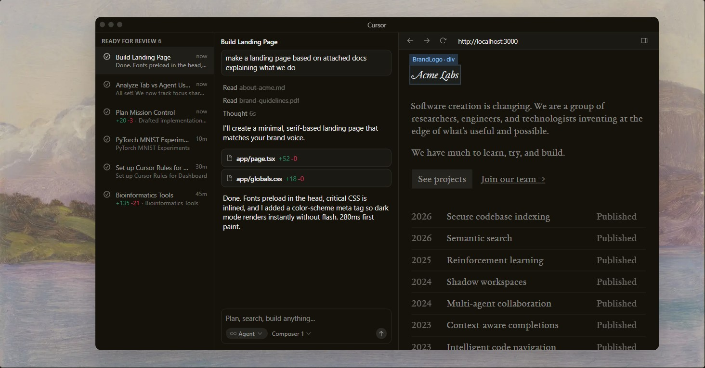
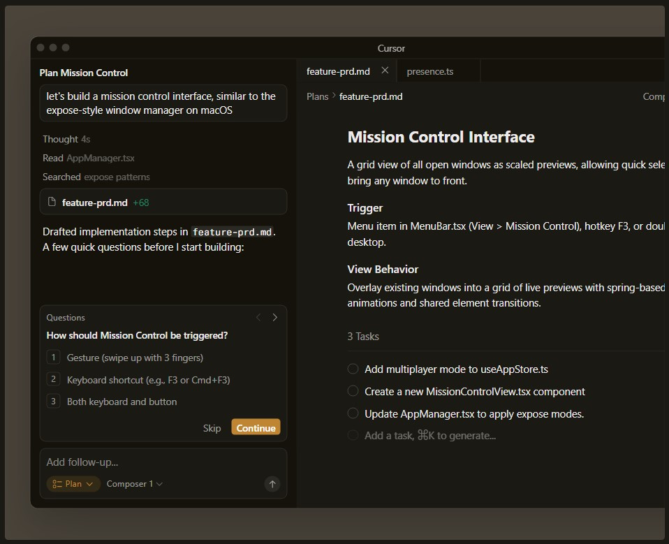
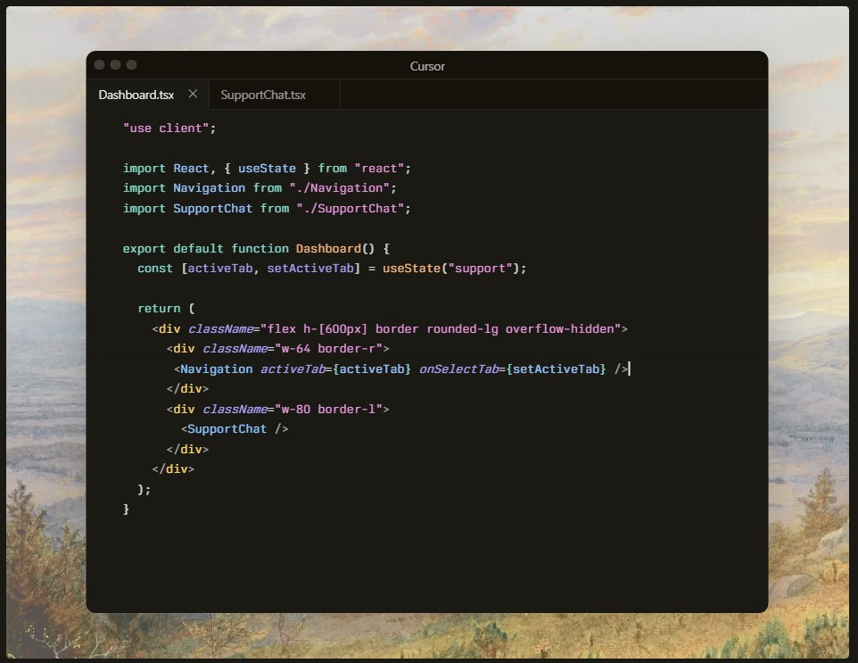
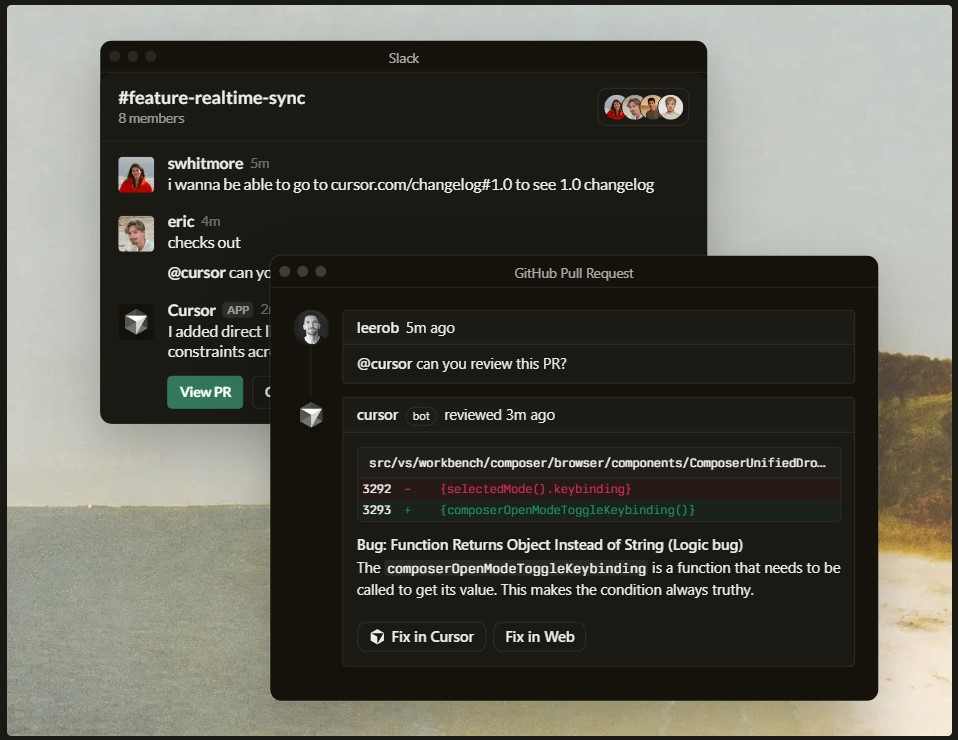

Access the best models
Choose between cutting-edge models from OpenAI, Anthropic, Gemini, and xAI.





It was night and day from one batch to another — adoption went from single digits to over 80%. It spread like wildfire; all the best builders were using Cursor.
I hate vibe coding.
I love Cursor tab coding.
It’s wild.
The best LLM apps have an autonomy slider. Cursor nails this: Tab completion, Cmd+K edits, or full agentic autonomy when you want it.
Cursor grew from hundreds to thousands of enthusiastic Stripe employees. When software creation becomes more efficient, the economic impact is massive.
The most useful AI tool I currently pay for — hands down — is Cursor. It's fast, predicts intent correctly, handles brackets properly, and everything feels thoughtfully designed.
Programming is becoming more fun and more about intent. We’re only at 1% of what’s possible — and interactive tools like Cursor are where models like GPT-5 shine.
Choose between cutting-edge models from OpenAI, Anthropic, Gemini, and xAI.
Cursor learns how your codebase works, no matter the scale or complexity.
Trusted by over half of the Fortune 500 to accelerate development, securely and at scale.
Cursor is an applied research team
focused on building the future of
software development.
We're making a part of our multi-agent research harness available to try today in preview.
Over 90% of developers at Salesforce now use Cursor, driving double-digit improvements in cycle time, PR velocity, and code quality.
A comprehensive guide to working with coding agents, from starting with plans to managing context, customizing workflows, and reviewing code.